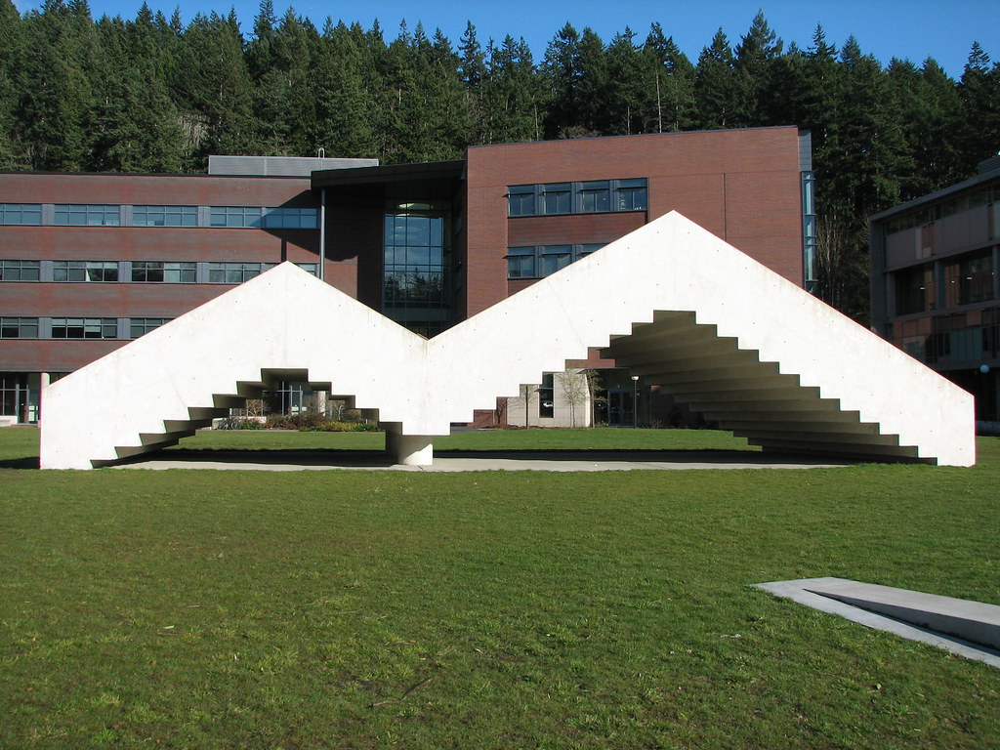

Intro
Stadium Piece, by Bruce Nauman, is certainly the most well-recognized art installation here on the WWU campus. It's located in the spacious patch of grass between the main parking lots and the heart of campus, so it's often the first sculpture people notice when arriving to school for the first time. The students affectionately refer to the sculpture as the "Stairs to Nowhere," perhaps because of its appearance, or perhaps because they revere it as a symbol of their academic pursuits.
Getting There
This exciting attraction is going to be worth a visit in person, as simply seeing an image of it is not enough to understand the magnitude of its impact on the surroundings.
Make sure to set aside at least 4 hours for your visit in order to ensure you have enough time to explore.
Experience
Finally, you're here at last. As you behold them in all their concrete majesty, you're immediately overcome with the shocking realization that the stairs do, in fact, lead nowhere. They go up, and then down slightly, and then up even higher, and then down once more, all in all landing the user back on the same level of ground they began their journey. They are utterly pointless, and perhaps that is exactly the point. So deep.
We've provided some suggestions below for what activities to engage in during your pilgrimage to the stairs, in case you suddenly find yourself too awestruck to know what to do with yourself, which is understandable.
- Walk up the stairs
- Walk down the stairs
- Sit upon the stairs
- Marvel at the stairs
- Smell the concrete
- Spy on students in the Communications Facility
- Remove students' trash from the inner area of the stairs
- Shelter from a flash hailstorm under the stairs
As you can see, the possibilities are endless.
Reflection
Now that you're safely back within your own home, out of the exhausting brilliance of the world's most inspirational structure, it is time to reflect upon what you've learned today. How has your life been forever enriched by this experience?
Did you take in the environment?
Did you absorb the atmosphere?
Did you caress the concrete?
Did you feel the power?
Did you analyze the aerodynamics?
Will you ever truly be the same after today?